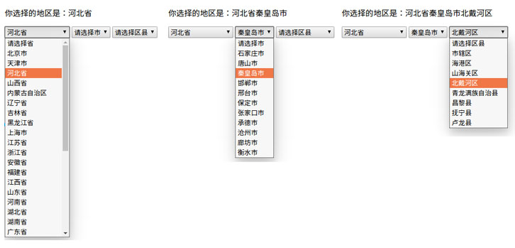

示例：省市区选择
- 本示例讲解在Django中使用jquery的ajax进行数据交互
- jquery框架中提供了$.ajax、$.get、$.post方法，用于进行异步交互，由于Django中默认使用CSRF约束，推荐使用$.get。
示例：实现省市区的选择
效果如下：

1、定义视图
def area_select(request):
return render(request, 'booktest/area_select.html')
def areas(request):
parent = request.GET.get('parent')
if parent == 'None':
areas = models.AreaInfo.objects.filter(aParent_id=None)
else:
areas = models.AreaInfo.objects.filter(aParent_id=int(parent))
jsonstr = []
for area in areas:
jsonstr.append({'id': area.id, 'atitle': area.atitle, 'aparent': area.aParent_id})
return JsonResponse({'data':jsonstr}
2、配置URL
urlpatterns = [
……
url('^area$', views.area_select),
url('^areas$', views.areas),
]
3、创建模板 area_select.html
<!DOCTYPE html>
<html lang="en">
<head>
<meta charset="UTF-8">
<title>Title</title>
<script src="/static/js/jquery-1.12.4.min.js"></script>
<script>
$(function () {
$.get('/areas',{'parent':'None'},function(dat){
var areas = dat.data;
var str = '<option value="">请选择省</option>';
for(var i=0;i<areas.length;i++)
{
str += '<option value="'+ areas[i].id +'">'+ areas[i].atitle +'</option>'
}
$('#province').html(str);
});
$('#province').change(function () {
var parent = $(this).val();
if(parent=='')
{
return;
}
$.get('/areas',{'parent':parent},function(dat){
var areas = dat.data;
var str = '<option value="">请选择市</option>';
for(var i=0;i<areas.length;i++)
{
str += '<option value="'+ areas[i].id +'">'+ areas[i].atitle +'</option>'
}
$('#city').html(str);
$('#state').html('<option value="">请选择区县</option>');
var text = $('#province').find('option:selected').text();
$('#chose_area01').html(text);
$('#chose_area02').empty();
$('#chose_area03').empty();
})
})
$('#city').change(function () {
var parent = $(this).val();
if(parent=='')
{
return;
}
$.get('/areas',{'parent':parent},function(dat){
var areas = dat.data;
var str = '<option value="">请选择区县</option>';
for(var i=0;i<areas.length;i++)
{
str += '<option value="'+ areas[i].id +'">'+ areas[i].atitle +'</option>'
}
$('#state').html(str);
var text = $('#city').find('option:selected').text();
$('#chose_area02').html(text);
$('#chose_area03').empty();
})
})
$('#state').change(function () {
var parent = $(this).val();
if(parent=='')
{
return;
}
var text = $(this).find('option:selected').text();
$('#chose_area03').html(text);
})
})
</script>
</head>
<body>
<p>你选择的地区是：<span id="chose_area01"></span>
<span id="chose_area02"></span>
<span id="chose_area03"></span></p>
<select name="province" id="province">
<option value="">请选择省</option>
</select>
<select name="city" id="city">
<option value="">请选择市</option>
</select>
<select name="state" id="state">
<option value="">请选择区县</option>
</select>
</body>
</html>